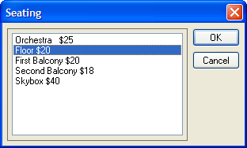

UI_GET_LIST()
Syntax
Result_String as C = UI_GET_LIST( Title as C, Default_Choice as A, Choice1 as C [, Choice2 as C [, ... [, Choice8 as C ]]] )
Argument | Description |
Title | The title of the dialog box. |
Default_Choice | Determines which entry is selected when the dialog box first appears. Can be a number (between 1 and 8), or a string (one of the choices). For example, if the Default Choice is 3, the third listbox entry is highlighted when the dialog box appears. |
Choice1 | The text for the first list entry. |
Choice2 ... Choice8 | Optional. Text descriptions for up to seven additional list items. |
Description
UI_GET_LIST() creates and displays a dialog box containing between 1 and 8 listbox choices. Your response is returned as a Result_String that contains the text of the listbox entry that you highlighted before you clicked the dialog box's OK button. This function is useful for obtaining a selection from a list of items.

For example, a dialog box with four items in a listbox can appear with the following statement:
ui_get_list("Four Listbox Items", 3, "One", "Two", "Three", "Four") |
The Result_String will be empty ("") if the Cancel button is selected.
Limitations
Desktop applications only.
Example
Display a list of choices and then print the selected choice in the Trace window.
choice = ui_get_list("Seating", 2, "Orchestra $25","Floor $20", "First Balcony $20","Second Balcony $18", "Skybox $40") if choice = "" then end end if trace.writeln(choice) |
See Also
User Interaction Functions, UI_GET_LIST2()